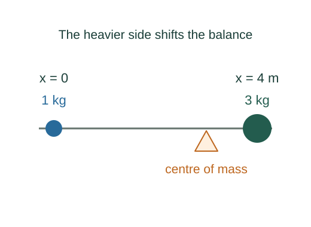

Why a system’s centre of mass obeys Newton’s law
The centre of mass is a mass-weighted average of position. Its special usefulness follows by differentiating that definition and adding the particle equations of motion.
What the symbols mean
mi: particle masses; M = Σmi: total mass; 𝐑cm: centre-of-mass position; 𝐀cm: its acceleration.
When this applies
Fixed particle masses and total mass, an inertial frame, and cancelling internal action–reaction forces.
Developing the argument

Define the weighted position
Multiply each position by its mass, add the results, and divide by total mass. A heavier object pulls the weighted average closer to its own position.
Differentiate once
Because the masses are constant, differentiating acts only on positions. The right side becomes the total momentum.
Differentiate again
The momentum rate is the net external force. Internal forces rearrange the parts but do not alter the total momentum rate.
A closer lookWhy do internal forces cancel? ↗Extend to continuous matter
Replace the sum by an integral over small mass elements. With local density, dm = ρ dV determines the weighting.
A closer lookHow do density and mass elements connect? ↗A worked example
Two masses, 1 kg at x = 0 and 3 kg at x = 4 m, have xcm = (1×0 + 3×4)/4 = 3 m.
Derivation behind this calculation ↗A point to keep straight
The centre of mass need not lie inside material: for a uniform ring it lies at the empty centre.
Check the assumptions and derivation ↗